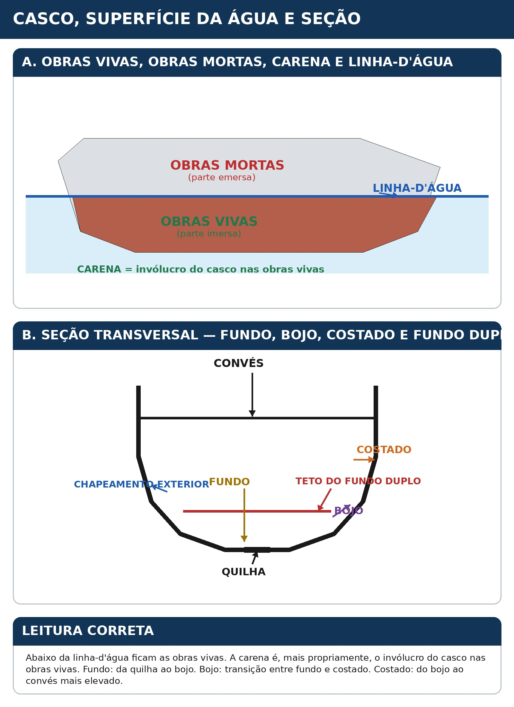
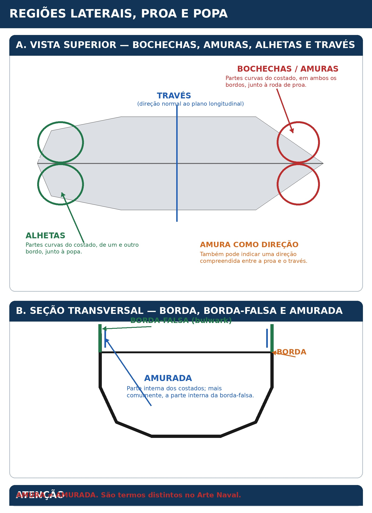
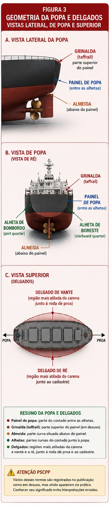
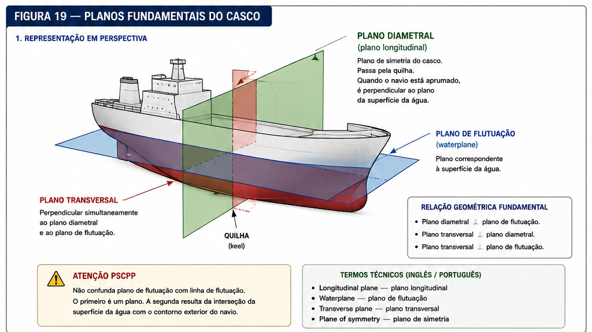
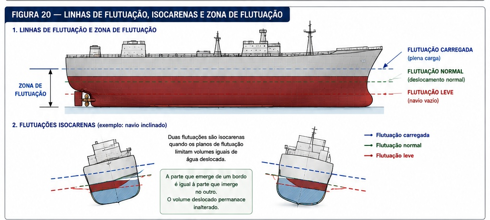
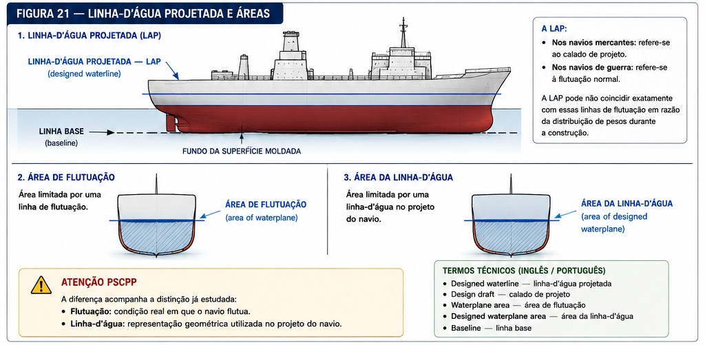

⚓ Nomenclatura, Geometria e Estrutura Naval
Ship Nomenclature, Geometry and Structure
Estudo da terminologia fundamental utilizada para identificar as partes do navio, suas regiões, dimensões, formas geométricas e principais elementos estruturais.
A compreensão dessa nomenclatura constitui a base para o estudo posterior de classificação dos navios, estabilidade, fundeio, amarração, reboque e manobras portuárias.
📊 Progresso da Aula
0% da aula concluída
📘 Identificação da aula
Disciplina: Arte Naval
Assunto: Nomenclatura, Geometria e Estrutura Naval
Termo técnico principal: Ship Nomenclature, Geometry and Structure
Nível: PSCPP
⏱ Cronômetro de Estudo
📖 Estudo
Estude com concentração durante o ciclo e utilize a pausa para descansar antes de iniciar uma nova sessão.
📋 Conteúdo programático
II — Arte Naval
Nomenclatura, Geometria e Estrutura Naval
- Embarcação e navio;
- casco e plano diametral;
- proa e popa;
- bordos, boreste e bombordo;
- avante e a ré;
- meia-nau;
- corpo de proa e corpo de popa;
- obras vivas, carena e obras mortas;
- linha-d'água;
- fundo, bojo e costado;
- geometria do navio e planos de referência;
- dimensões principais do navio;
- estrutura do casco;
- elementos estruturais longitudinais;
- elementos estruturais transversais;
- chapeamento e reforços estruturais.
🎯 Objetivos de aprendizagem
Ao concluir esta aula, o aluno deverá ser capaz de:
- distinguir os conceitos de embarcação e navio;
- identificar as principais regiões do casco;
- diferenciar proa, popa, boreste e bombordo;
- utilizar corretamente as referências avante e a ré;
- identificar meia-nau, corpo de proa e corpo de popa;
- diferenciar obras vivas, carena e obras mortas;
- identificar linha-d'água, fundo, bojo e costado;
- compreender os principais planos e dimensões utilizados na geometria do navio;
- reconhecer os principais elementos estruturais longitudinais e transversais;
- relacionar nomenclatura naval com a interpretação operacional do navio;
- utilizar corretamente os principais termos técnicos em inglês marítimo.
📚 Publicações utilizadas
Arte Naval — Volume 1
Publicação principal utilizada para a nomenclatura, geometria e estrutura básica do navio.
Autor: Maurílio Magalhães Fonseca.
Edição: 8ª edição, 2019.
Trechos principais utilizados nesta aula: Capítulo 1 — Nomenclatura do Navio e Capítulo 2 — Geometria do Navio.
Precisão bibliográfica
O desenvolvimento desta aula será baseado prioritariamente no conteúdo efetivamente apresentado no Arte Naval — Volume 1.
Conteúdos pertencentes à classificação dos navios, estabilidade, fundeio, amarração e demais módulos serão mantidos em suas respectivas aulas para evitar duplicações.
🗂 Organização da aula
- nomenclatura fundamental do navio;
- regiões e referências direcionais;
- obras vivas, obras mortas e linha-d'água;
- partes externas do casco;
- fundamentos da geometria naval;
- dimensões principais;
- estrutura do casco;
- elementos longitudinais;
- elementos transversais;
- chapeamento e reforços estruturais;
- terminologia técnica em inglês marítimo;
- aplicações e pontos de atenção para o PSCPP.
PARTE 1 — NOMENCLATURA FUNDAMENTAL DO NAVIO
O estudo da Arte Naval começa pela linguagem utilizada para identificar o navio e suas diferentes regiões.
Nesta primeira parte serão apresentados os conceitos básicos empregados pelo Arte Naval — Volume 1 para definir embarcação, navio, casco, proa, popa, bordos e referências longitudinais.
Esses termos formam a base para praticamente todos os assuntos posteriores da disciplina.
1. Embarcação e navio
O Arte Naval utiliza embarcação (vessel) como termo de uso geral para designar uma construção que flutua e se destina ao transporte, pela água, de pessoas e/ou cargas.
A publicação registra que essas construções podem ser feitas de materiais como madeira, concreto, aço, alumínio ou combinações de diferentes materiais.
O termo navio (ship) designa, em geral, as embarcações de maior porte.
Conceito fundamental
Embarcação é o termo de sentido mais geral.
Navio é empregado, em geral, para embarcações de maior porte.
🌐 Termos técnicos
- Vessel — embarcação;
- Ship — navio;
- Boat — barco.
⚠ Atenção PSCPP
Em uma questão conceitual, não é recomendável tratar embarcação e navio como termos rigorosamente equivalentes.
O próprio Arte Naval distingue o uso geral de embarcação do emprego de navio para os meios de maior porte.
2. Casco e plano diametral
O casco (hull) é o corpo do navio considerado sem mastreação, aparelhos acessórios ou outros arranjos.
Segundo o Arte Naval, o casco normalmente não possui uma forma geométrica simples e definida.
Uma característica fundamental de sua forma é possuir, na maioria dos casos, um plano de simetria, denominado plano diametral, que se imagina passando pela quilha.
Importância da forma do casco
A publicação relaciona a forma adequada do casco às qualidades náuticas do navio, incluindo:
- resistência mínima à propulsão;
- mobilidade;
- estabilidade de plataforma.
Figura 1. Representação didática do plano diametral em vista superior do casco.
🌐 Termos técnicos
- Hull — casco;
- Centerline plane — plano diametral ou plano longitudinal de simetria;
- Keel — quilha.
3. Proa e popa
Proa
A proa (bow ou foreship) é a extremidade de vante do navio no sentido de sua marcha normal.
Sua forma exterior é normalmente adequada para facilitar a penetração do navio no mar.
Popa
A popa (stern ou aftship) é a extremidade de ré do navio.
O Arte Naval destaca que sua forma é normalmente adequada para facilitar o fluxo da água produzido pelo movimento do navio e favorecer a ação eficiente do leme e do hélice.
Figura 2. Identificação de proa e popa em vista superior.
🌐 Termos técnicos
- Bow — proa;
- Foreship — região de proa;
- Stern — popa;
- Aftship — região de popa.
4. Bordos — boreste e bombordo
Os bordos (sides) são as partes laterais do casco.
Para sua identificação, considera-se o observador situado no plano diametral e olhando para a proa.
Boreste — BE — Starboard side: bordo situado à direita.
Bombordo — BB — Port side: bordo situado à esquerda.
Figura 3. Referência de boreste e bombordo com o observador orientado para a proa.
⚠ Atenção PSCPP
Boreste e bombordo são referências fixas do navio.
A definição é estabelecida considerando o observador voltado para a proa, mas o bordo não muda quando uma pessoa muda sua orientação a bordo.
🌐 Termos técnicos
- Starboard side — boreste;
- Port side — bombordo;
- Sides — bordos.
5. Avante e a ré
Na nomenclatura naval, as expressões avante e a ré indicam a posição de objetos ou partes do navio em relação às regiões de proa e popa.
Segundo o Arte Naval, diz-se que alguma coisa é de vante (ahead) ou está avante — AV quando está na região da proa.
Da mesma forma, diz-se que alguma coisa é de ré (aft) ou está à ré — AR quando está na região da popa.
Posição relativa
Quando dois objetos são comparados longitudinalmente, aquele que estiver mais próximo da proa estará por anteavante — AAV do outro.
O objeto localizado mais para a popa estará por ante à ré — AAR do outro.
Figura 4. Representação didática das referências longitudinais avante e a ré.
🌐 Termos técnicos
- Ahead — de vante / na direção de vante;
- Aft — de ré / na região de ré;
- AV — avante;
- AR — a ré;
- AAV — por anteavante;
- AAR — por ante à ré.
⚠ Atenção PSCPP
As expressões avante e a ré não designam necessariamente as extremidades físicas do casco.
Elas são também referências utilizadas para indicar a posição longitudinal relativa de elementos do navio.
6. Meia-nau
A meia-nau (midship) é definida pelo Arte Naval como a parte do casco compreendida entre a proa e a popa.
É importante observar que as palavras proa, popa e meia-nau não determinam, nesse emprego, uma extensão rigorosamente delimitada do casco.
Elas designam regiões, cujo tamanho é indefinido.
Significado original
Em seu significado original, meia-nau refere-se à parte do casco próxima do plano diametral, isto é, equidistante dos bordos do navio.
Figura 5. Indicação didática da região de meia-nau. O desenho não pretende estabelecer limites rígidos para essa região.
🌐 Termos técnicos
- Midship — meia-nau;
- Midship section — seção a meia-nau.
⚠ Atenção PSCPP
Uma possível armadilha conceitual é interpretar meia-nau, neste contexto, como um único ponto matemático do navio.
O Arte Naval deixa expresso que proa, popa e meia-nau podem designar regiões de tamanho indefinido.
7. Bico de proa
O bico de proa é definido pelo Arte Naval como a parte extrema da proa de um navio.
Distinção importante
Proa pode designar uma região do navio.
Bico de proa designa especificamente a sua parte extrema de vante.
Figura 6. Indicação esquemática da parte extrema da proa.
8. Corpo de proa e corpo de popa
Para essa divisão, utiliza-se como referência a seção a meia-nau.
Corpo de proa
O corpo de proa (fore body) é a metade do navio situada por anteavante da seção a meia-nau.
Corpo de popa
O corpo de popa (after body) é a metade do navio situada por ante à ré da seção a meia-nau.
Figura 7. Divisão didática do navio pela seção a meia-nau.
🌐 Termos técnicos
- Fore body — corpo de proa;
- After body — corpo de popa;
- Midship section — seção a meia-nau.
PARTE 2 — O CASCO E A SUPERFÍCIE DA ÁGUA
A partir deste ponto, a nomenclatura passa a distinguir as partes do casco conforme sua posição em relação ao plano de flutuação.
Serão estudados os conceitos de obras vivas, carena, obras mortas, linha-d'água e outras regiões fundamentais da geometria externa e interna do casco.
9. Obras vivas, carena e obras mortas
Obras vivas
As obras vivas correspondem à parte do casco situada abaixo do plano de flutuação em plena carga.
É, portanto, a parte que permanece total ou quase totalmente imersa.
Carena
O termo carena é empregado algumas vezes em lugar de obras vivas.
Entretanto, o Arte Naval faz uma distinção importante: mais propriamente, carena significa o invólucro do casco nas obras vivas.
Obras mortas
As obras mortas correspondem à parte do casco situada acima do plano de flutuação em plena carga e que permanece emersa.
⚠ Distinção importante
O texto do Arte Naval não apresenta carena e obras vivas como termos absolutamente equivalentes.
Embora carena possa ser utilizada em lugar de obras vivas, o emprego mais próprio é para o invólucro do casco nas obras vivas.
🌐 Termos técnicos
- Underwater body — parte submersa do casco;
- Waterline — linha-d'água;
- Hull — casco.
⚠ Atenção do Prático
A distinção entre a parte imersa e a parte emersa do casco terá importância direta em assuntos posteriores, como calado, estabilidade, resistência hidrodinâmica e ação do vento sobre o navio.
10. Linha-d'água — Waterline
A linha-d'água (waterline) é a linha que separa a parte imersa do casco, correspondente às obras vivas, da parte emersa, correspondente às obras mortas.
O Arte Naval registra que ela é representada no casco por uma faixa pintada com tinta especial, de proa a popa.
A aresta inferior dessa faixa corresponde à linha de flutuação leve.
🌐 Termos técnicos
- Waterline — linha-d'água;
- Light waterline — linha de flutuação leve;
- Immersed portion — parte imersa;
- Emergent portion — parte emersa.
Relação fundamental
Abaixo da linha-d'água: obras vivas.
Acima da linha-d'água: obras mortas.
11. Fundo, bojo e costado
Fundo do navio
O fundo do navio (ship bottom) é a parte inferior do casco compreendida desde a quilha até o bojo.
Quando o fundo apresenta forma chata, o Arte Naval emprega a expressão fundo de prato.
Bojo
O bojo (bilge) é a parte do casco que constitui a transição entre o fundo e o costado.
Essa transição pode apresentar forma curva ou reta.
Costado
O costado (side) é a parte lateral do casco compreendida entre o bojo e o convés mais elevado.
Na construção naval, enquanto a linha-d'água ainda não estiver traçada, o termo costado é empregado para o revestimento do casco situado acima do bojo.
🌐 Termos técnicos
- Ship bottom — fundo do navio;
- Bilge — bojo;
- Side — costado;
- Keel — quilha.
Relação geométrica
A sequência transversal simplificada pode ser entendida como:
quilha → fundo → bojo → costado → convés.
⚠ Atenção PSCPP
O bojo não é simplesmente o fundo nem simplesmente o costado.
Ele corresponde especificamente à região de transição entre ambos.
12. Chapeamento e revestimentos do casco
Chapeamento exterior
A expressão antiga forro exterior designava o revestimento externo do casco, tanto no costado quanto na carena.
Esse revestimento podia ser constituído por chapas ou tábuas.
O Arte Naval registra que atualmente esse elemento é denominado simplesmente chapeamento (outer plating).
Revestimento interior do fundo
A antiga expressão forro interior do fundo designava o revestimento interno do fundo do navio.
Atualmente, esse elemento corresponde ao teto do fundo duplo (inner bottom).
🌐 Termos técnicos
- Outer plating — chapeamento exterior;
- Inner bottom — teto do fundo duplo;
- Double bottom — fundo duplo.
Terminologia histórica
O Arte Naval chama atenção para a mudança de nomenclatura:
forro exterior → chapeamento
forro interior do fundo → teto do fundo duplo
🖼 Geometria do casco em relação à água

Figura integrada — Casco e superfície da água.
A figura reúne os conceitos de obras vivas, obras mortas, linha-d'água, quilha, fundo, bojo, costado, chapeamento exterior e teto do fundo duplo.
A vista lateral permite observar a separação entre as partes imersa e emersa, enquanto a seção transversal evidencia a sequência geométrica do casco e a disposição do fundo duplo.
13. Bochechas e amura
Bochechas
As bochechas são as partes curvas do costado, em ambos os bordos, situadas junto à roda de proa.
Amura
O termo amura (bow ou tack) pode ser empregado com o mesmo significado de bochecha.
A publicação registra ainda um segundo emprego: amura pode indicar uma direção qualquer compreendida entre a proa e o través.
Través
O Arte Naval define través como a direção normal ao plano longitudinal do navio.
🌐 Termos técnicos
- Bow — proa / amura, conforme o contexto;
- Tack — amura;
- Beam — través, em uso direcional marítimo;
- Stem — roda de proa.
⚠ Atenção PSCPP
Amura possui mais de um emprego.
Pode designar a região curva junto à proa, como sinônimo de bochecha, ou uma direção entre a proa e o través.
14. Borda e borda-falsa
Borda
A borda é o limite superior do costado.
Ela pode terminar na altura do convés, quando recebe balaustrada, ou elevar-se acima desse nível.
Borda-falsa
Quando o costado se prolonga acima do convés, forma a borda-falsa (bulwark).
A borda-falsa é um parapeito situado em convés exposto ao tempo e possui estrutura mais leve que as demais chapas do costado.
Sua finalidade é proteger o pessoal e o material existentes no convés, reduzindo o risco de queda ao mar.
O Arte Naval registra ainda que a borda-falsa possui saídas de água e pode dispor de portinholas que se abrem de dentro para fora, permitindo o escoamento de grandes massas de água embarcadas no convés em mar grosso.
🌐 Termos técnicos
- Bulwark — borda-falsa;
- Deck — convés;
- Side — costado.
⚠ Atenção do Prático
A borda-falsa não deve ser confundida com o próprio costado estrutural.
Segundo a publicação, ela possui estrutura mais leve e função essencialmente de proteção do pessoal e do material no convés.
15. Amurada
A amurada (side) é definida pelo Arte Naval como a parte interna dos costados.
A publicação observa que o termo é usado mais comumente para indicar a parte interna da borda-falsa.
Terminologia da publicação
O Arte Naval registra expressamente que o termo amurada, nesse sentido, encontra-se em desuso.
⚠ Atenção PSCPP
Não confunda amurada com amura.
Nesta nomenclatura:
- amura pode designar a região da bochecha ou uma direção entre proa e través;
- amurada refere-se à parte interna dos costados, especialmente à parte interna da borda-falsa.
16. Alhetas — Quarter
As alhetas (quarter) são as partes curvas do costado, de um e de outro bordo, situadas junto à popa.
Elas representam, portanto, as regiões curvas de transição dos costados em direção à extremidade de ré.
🌐 Termos técnicos
- Quarter — alheta;
- Port quarter — alheta de bombordo;
- Starboard quarter — alheta de boreste.
⚠ Aplicação operacional
O termo quarter aparece com frequência na linguagem marítima operacional para indicar uma posição ou direção relativa próxima da região de popa.
🖼 Regiões laterais, proa e popa

Figura integrada — Regiões laterais, proa e popa.
A figura reúne, em diferentes vistas, as regiões denominadas bochechas, amuras, alhetas, borda, borda-falsa e amurada.
A representação superior deverá facilitar a distinção entre as regiões próximas à proa e à popa, enquanto uma seção transversal deverá destacar a relação entre costado, borda, borda-falsa e sua face interna.
17. Painel de popa
O painel de popa, ou simplesmente painel, é definido pelo Arte Naval como a parte do costado situada na popa, entre as alhetas.
Terminologia da publicação
O Arte Naval registra esse termo como em desuso.
18. Grinalda — Taffrail
A grinalda (taffrail) é definida pelo Arte Naval como a parte superior do painel de popa.
Terminologia da publicação
Assim como o painel de popa, o termo grinalda é registrado na publicação como em desuso.
🌐 Termos técnicos
- Taffrail — grinalda;
- Stern — popa;
- Quarter — alheta.
19. Almeida
A almeida é a parte curva do costado do navio, situada na popa, logo abaixo do painel.
Segundo o Arte Naval, a almeida forma com o painel um ângulo obtuso ou uma curvatura.
🌐 Termos técnicos
- Lower stern timber — termo apresentado pelo Arte Naval para almeida;
- Stern — popa.
⚠ Atenção PSCPP
A almeida não corresponde ao painel propriamente dito.
Ela se localiza abaixo do painel e constitui uma parte curva da região de popa.
20. Delgados
Os delgados são as partes da carena mais atiladas, situadas tanto avante quanto a ré.
Segundo o Arte Naval, essas regiões encontram-se de um e de outro bordo, respectivamente junto à roda de proa e ao cadaste.
Ideia central
O termo delgado está associado às regiões em que as formas da carena se afinam progressivamente em direção às extremidades do navio.
⚠ Aplicação conceitual
O conceito será útil posteriormente para interpretar a geometria das formas de proa e popa, bem como a distribuição das seções do casco.
🖼 Geometria da popa e afinamento da carena

Figura integrada — Geometria da popa e delgados.
A figura reúne os elementos painel de popa, grinalda, almeida e alhetas, mostrando suas posições relativas na região de ré.
Uma segunda representação deverá destacar os delgados de vante e de ré, evidenciando o progressivo afinamento das formas da carena próximo às extremidades.
PARTE 3 — FUNDAMENTOS DA GEOMETRIA DO NAVIO
Com a nomenclatura externa fundamental estabelecida, o estudo passa agora para a descrição geométrica das formas do casco.
Serão introduzidos os planos de referência, as linhas utilizadas para representar o navio e as dimensões fundamentais empregadas em sua descrição.
Essa base permitirá interpretar corretamente comprimento, boca, pontal, calado e as demais grandezas geométricas apresentadas pelo Arte Naval.
21. Planos fundamentais do casco
Uma característica geométrica fundamental do navio é a existência, no casco, de um plano de simetria.
A partir dessa referência, o Arte Naval define três planos fundamentais:
- plano diametral;
- plano de flutuação;
- plano transversal.
Plano diametral
O plano diametral, também denominado plano longitudinal, é o plano de simetria do casco e passa pela quilha.
Quando o navio está aprumado, esse plano é perpendicular ao plano da superfície da água.
Plano de flutuação
O plano correspondente à superfície da água recebe o nome de plano de flutuação.
Plano transversal
O plano transversal é perpendicular simultaneamente ao plano diametral e ao plano de flutuação.

Figura 19. Planos fundamentais do casco: plano diametral, plano de flutuação e plano transversal. Representação didática baseada na Fig. 2-1 — Planos do casco, do Arte Naval — Volume 1.
Relação geométrica fundamental
Os três planos são mutuamente relacionados:
plano diametral ⟂ plano de flutuação
e o plano transversal é perpendicular aos dois.
🌐 Termos técnicos
- Longitudinal plane — plano longitudinal;
- Waterplane — plano de flutuação;
- Transverse plane — plano transversal;
- Plane of symmetry — plano de simetria.
⚠ Atenção PSCPP
Não confunda plano de flutuação com linha de flutuação.
O primeiro é um plano. A segunda resulta da interseção da superfície da água com o contorno exterior do navio.
22. Linha de flutuação
A linha de flutuação — LF (waterline), ou simplesmente flutuação, é a interseção da superfície da água com o contorno exterior do navio.
Sua posição varia de acordo com a condição de carregamento da embarcação.
Flutuação carregada
A flutuação correspondente ao navio completamente carregado é denominada flutuação carregada ou flutuação em plena carga.
Flutuação leve
A flutuação correspondente ao navio completamente vazio, sem carga, é denominada flutuação leve.
Flutuação normal
A flutuação correspondente ao navio em deslocamento normal é denominada flutuação normal.
Linha-d'água de projeto
A linha de flutuação correspondente ao calado para o qual o navio foi projetado recebe a denominação de linha-d'água de projeto.

Figura 20. Representação didática das relações entre flutuação carregada, flutuação leve, zona de flutuação e flutuações isocarenas, com base nos conceitos apresentados pelo Arte Naval — Volume 1.
Relação fundamental
A linha de flutuação não é uma referência permanentemente fixa no casco.
Sua posição depende da condição em que o navio se encontra flutuando.
23. Flutuações direitas e isocarenas
Flutuações direitas ou retas
Quando o navio não está inclinado, as diferentes flutuações em que ele pode ficar são paralelas entre si.
Essas posições recebem a denominação de flutuações direitas ou flutuações retas (upright positions).
O Arte Naval estabelece ainda que, quando o termo flutuação é utilizado sem outra indicação, ele se refere à flutuação direita e carregada.
Flutuações isocarenas
Duas flutuações são denominadas isocarenas quando os respectivos planos de flutuação limitam volumes iguais de água deslocada.
Um exemplo apresentado pela publicação ocorre quando o navio se inclina lateralmente.
Nesse caso, a parte que emerge de um bordo é igual à parte que imerge no outro.
A forma da porção imersa da carena é modificada, mas seu volume permanece inalterado.
Conceito-chave
Flutuações isocarenas: a forma da carena imersa pode mudar, mas o volume deslocado permanece igual.
🌐 Termos técnicos
- Upright position — posição direita / navio aprumado;
- Waterplane — plano de flutuação;
- Displaced volume — volume de água deslocada.
⚠ Atenção PSCPP
O conceito de isocarena está relacionado à igualdade de volume deslocado, e não à manutenção da mesma forma geométrica da parte imersa.
24. Zona de flutuação
A zona de flutuação (boot topping) é a parte das obras vivas compreendida entre a flutuação carregada e a flutuação leve.
Nos navios de guerra, essa região é assinalada na carena pela pintura da linha-d'água.
O Arte Naval estabelece ainda uma relação importante entre essa região e a capacidade de carga:
Relação com a capacidade de carga
O deslocamento correspondente à zona de flutuação indica, em peso, a capacidade total de carga do navio.
Observe novamente a Figura 20.
A zona de flutuação é justamente a faixa compreendida entre as duas linhas ali representadas:
- limite superior — flutuação carregada;
- limite inferior — flutuação leve.
🌐 Termos técnicos
- Boot topping — zona de flutuação;
- Loaded waterline — flutuação carregada;
- Light waterline — flutuação leve.
25. Linha-d'água projetada — LAP
A Linha-d'Água Projetada — LAP, também denominada flutuação de projeto (designed waterline), é a principal linha de flutuação estabelecida pelo construtor no plano de linhas do navio.
Navios mercantes
Nos navios mercantes, a LAP refere-se à linha de flutuação correspondente ao denominado calado de projeto.
Navios de guerra
Nos navios de guerra, ela se refere à flutuação normal.
O Arte Naval ressalta, entretanto, que a LAP pode não coincidir com essas linhas de flutuação em razão da distribuição de pesos durante a construção.

Figura 21. Representação didática da Linha-d'Água Projetada — LAP, da linha base e das referências geométricas relacionadas às áreas de flutuação e da linha-d'água, com base nos conceitos apresentados pelo Arte Naval — Volume 1.
Não confundir
Linha de flutuação: resulta da condição real em que o navio flutua.
Linha-d'água projetada: é estabelecida no projeto do navio.
🌐 Termos técnicos
- Designed waterline — linha-d'água projetada;
- Design draft — calado de projeto;
- Baseline — linha base.
26. Área de flutuação e área da linha-d'água
Área de flutuação
A área de flutuação (area of waterplane) é a área limitada por uma linha de flutuação.
Área da linha-d'água
A área da linha-d'água é a área limitada por uma linha-d'água no projeto do navio.
Distinção conceitual
A diferença acompanha a distinção já estudada:
flutuação está associada à condição em que o navio efetivamente flutua;
linha-d'água, neste contexto, integra a representação geométrica utilizada no projeto do navio.
⚠ Atenção PSCPP
A semelhança entre as expressões área de flutuação e área da linha-d'água não elimina a distinção feita pelo Arte Naval.
A primeira está associada à flutuação do navio; a segunda, à linha-d'água representada no projeto.
PARTE 4 — SUPERFÍCIES E FORMAS GEOMÉTRICAS DO CASCO
A descrição geométrica do navio exige distinguir a forma teórica utilizada no projeto da superfície externa efetivamente existente no casco.
Nesta parte serão estudados os conceitos de superfície moldada, linhas moldadas, superfície da carena, superfície molhada e os volumes correspondentes.
Em seguida serão examinadas algumas características geométricas da seção transversal do navio, incluindo curvatura do vau, mediania, seção a meia-nau e seção mestra.
27. Superfície moldada — Moulded surface
A superfície moldada (moulded surface) é uma superfície contínua imaginária que passa pelas faces externas do cavernamento do navio e dos vaus do convés.
Nos navios cujo chapeamento é liso, a superfície moldada coincide com a face interna do chapeamento.
Nas embarcações metálicas dotadas de quilha maciça e, em alguns casos, de quilha chata, o contorno inferior da superfície moldada coincide com a face superior da chapa-quilha.
Nas embarcações de madeira, a referência utilizada é a projeção, sobre o plano diametral, do canto superior do alefriz da quilha.
Figura 22. Representação didática baseada na Fig. 2-4 — Superfície moldada do Arte Naval — Volume 1. A publicação compara o chapeamento a topo com o chapeamento em trincado.
Conceito fundamental
A superfície moldada é uma referência geométrica de projeto.
Ela não deve ser automaticamente confundida com a superfície exterior real do casco.
🌐 Termos técnicos
- Moulded surface — superfície moldada;
- Plating — chapeamento;
- Frame — caverna;
- Deck beam — vau do convés.
28. Linhas moldadas — Moulded lines
As linhas moldadas (moulded lines) são as linhas do navio referidas à superfície moldada.
Nos navios de casco metálico, a diferença entre as linhas moldadas e as linhas externas corresponde à espessura do chapeamento.
O Arte Naval estabelece que as linhas empregadas no desenho do plano de linhas são linhas moldadas.
Relação importante
Linhas moldadas: representam geometricamente a superfície moldada.
Linhas externas: consideram a superfície exterior real do casco.
Nos cascos metálicos, a diferença entre ambas corresponde essencialmente à espessura do chapeamento.
29. Superfície da carena
A superfície da carena é a superfície da parte imersa do casco considerada por fora do chapeamento, sem incluir os apêndices.
Segundo o Arte Naval, a soma da superfície da carena com a superfície do costado representa a área total do chapeamento.
Essa grandeza permite, entre outras aplicações, estimar aproximadamente o peso total do chapeamento.
Não inclui
Na definição de superfície da carena, os apêndices não são incluídos.
30. Superfície molhada — Wetted surface
Para um determinado plano de flutuação, a superfície molhada (wetted surface) é a superfície externa da carena que fica efetivamente em contato com a água.
Ela compreende:
- a superfície da carena;
- as superfícies dos apêndices.
Aplicações indicadas pelo Arte Naval
A superfície molhada é necessária para o cálculo da resistência de atrito ao movimento do navio.
Somada à superfície do costado, ela também permite estimar a quantidade de tinta necessária para a pintura do casco.
⚠ Atenção PSCPP
Existe uma diferença importante:
Superfície da carena: não inclui os apêndices.
Superfície molhada: inclui as superfícies dos apêndices efetivamente em contato com a água.
🌐 Termos técnicos
- Wetted surface — superfície molhada;
- Appendages — apêndices;
- Frictional resistance — resistência de atrito.
31. Volume da forma moldada e volume da carena
Volume da forma moldada
O volume da forma moldada é o volume compreendido entre a superfície moldada da carena e um determinado plano de flutuação.
Volume da carena
O volume da carena é o volume compreendido entre a superfície molhada e um dado plano de flutuação.
A publicação observa que esse volume pode ser chamado simplesmente de carena nos cálculos, pois nesse contexto não existe possibilidade de confusão com a região do casco que recebe o mesmo nome.
Embarcações de casco metálico
Nas embarcações metálicas, o volume da carena é calculado somando:
- o volume do deslocamento moldado;
- o volume do chapeamento;
- os volumes dos apêndices.
O Arte Naval cita como exemplos de apêndices:
- parte saliente da quilha;
- leme;
- hélice;
- pés-de-galinha;
- bolinas.
Utilização
O volume da carena é o volume empregado no cálculo do deslocamento do navio.
⚠ Atenção PSCPP
Não confunda:
volume da forma moldada com volume da carena.
No casco metálico, o volume da carena considera, além do volume moldado, o chapeamento e os apêndices correspondentes.
PARTE 5 — GEOMETRIA DA SEÇÃO TRANSVERSAL
A geometria do navio também é estudada por meio de suas seções transversais.
O Arte Naval utiliza a Fig. 2-6 — Dimensões da seção a meia-nau para reunir vários conceitos importantes, como curvatura do vau, flecha do vau, boca moldada e pontal moldado.
A mesma lógica será utilizada aqui: uma única representação servirá de referência para os conceitos seguintes.
32. Curvatura, linha reta e flecha do vau
Curvatura do vau
Os vaus dos conveses expostos ao tempo e, algumas vezes, os das cobertas situadas acima da linha-d'água possuem uma curvatura.
Sua finalidade é permitir que a água escoe em direção ao costado, facilitando sua retirada do convés.
Segundo o Arte Naval, essa curvatura pode assumir a forma de:
- arco de circunferência;
- parábola;
- conjunto de segmentos retos.
A curvatura também proporciona resistência adicional ao vau.
Linha reta do vau
A linha reta do vau é a linha que une as interseções da face superior do vau com as faces exteriores da caverna correspondente.
Flecha do vau
A flecha do vau (deck camber) é a maior distância entre a face superior do vau e sua linha reta.
Por definição, essa distância é medida no plano diametral do navio.
Figura 23. Representação didática baseada na Fig. 2-6 — Dimensões da seção a meia-nau, do Arte Naval — Volume 1. Os conceitos de boca e pontal serão aprofundados na próxima parte, dedicada às dimensões lineares.
🌐 Termos técnicos
- Deck camber — flecha do vau;
- Deck beam — vau;
- Frame — caverna.
33. Mediania
A mediania é a interseção de um pavimento com o plano diametral do navio.
Trata-se de uma linha imaginária que divide longitudinalmente o casco em seus dois bordos:
- boreste;
- bombordo.
Referência geométrica
A mediania encontra-se exatamente sobre o plano de simetria longitudinal do navio.
34. Seção a meia-nau
A seção a meia-nau é a seção transversal localizada a meio comprimento entre as perpendiculares.
Essa definição será especialmente importante quando forem estudadas as dimensões longitudinais do navio e o comprimento entre perpendiculares.
35. Seção transversal e seção mestra
Seção transversal
Chama-se seção transversal (cross section) qualquer seção determinada no casco por um plano transversal.
Seção mestra
A mais significativa das seções transversais recebe o nome de seção mestra (midship section).
Segundo o Arte Naval, a seção mestra encontra-se geralmente à meia-nau ou muito próxima dela.
⚠ Atenção PSCPP
Seção a meia-nau e seção mestra não constituem obrigatoriamente a mesma definição.
A seção a meia-nau é definida geometricamente pela metade do comprimento entre perpendiculares.
A seção mestra é a seção transversal mais significativa e normalmente se encontra à meia-nau ou muito próxima dela.
Corpo paralelo
Em muitos navios modernos, especialmente cargueiros, uma região central apreciável do casco pode ser formada por várias seções iguais à seção mestra.
Nessa situação, a região recebe a denominação de corpo paralelo.
Formas cheias e formas finas
Quando uma região central significativa é constituída por seções iguais à seção mestra, o Arte Naval relaciona essa configuração a navios de formas cheias.
Nos navios de formas finas, as formas das seções transversais variam consideravelmente ao longo do comprimento, tanto a vante quanto a ré da seção mestra.
🌐 Termos técnicos
- Cross section — seção transversal;
- Midship section — seção mestra;
- Parallel body — corpo paralelo.
📌 Limite entre os módulos
O Arte Naval prossegue, a partir do item 2.21, para os conceitos de:
- centro de gravidade;
- centro de carena;
- centro de flutuação;
- empuxo;
- Princípio de Arquimedes;
- flutuabilidade;
- reserva de flutuabilidade;
- borda-livre;
- metacentros;
- raios e alturas metacêntricas.
Esses conceitos serão desenvolvidos na aula Estabilidade, Arqueação e Deslocamento, evitando duplicação de conteúdo entre os módulos do Bridge Trainer PSCPP.
PARTE 6 — PLANO DE LINHAS E DIMENSÕES DO NAVIO
A próxima etapa retomará o estudo geométrico com o plano de linhas, seus planos e linhas de referência e a representação das formas do casco.
Em seguida serão estudadas as principais dimensões lineares do navio, incluindo:
- perpendiculares;
- comprimentos;
- boca;
- pontal;
- calado.
36. Plano de linhas — Lines Plan
O plano de linhas (Lines Plan) é a representação gráfica das formas do casco por meio da projeção de suas linhas sobre três planos de referência.
Segundo o Arte Naval, o plano de linhas é constituído por três vistas principais:
- plano das linhas-d'água;
- plano de perfil;
- plano das balizas.
Ideia central
Nenhuma dessas vistas, isoladamente, representa completamente a forma tridimensional do casco.
A interpretação conjunta das três permite reconstituir geometricamente sua forma.
🌐 Termos técnicos
- Lines Plan — plano de linhas;
- Waterlines Plan — plano das linhas-d'água;
- Profile Plan — plano de perfil;
- Body Plan — plano das balizas.
37. Planos de referência do plano de linhas
O Arte Naval utiliza três planos fundamentais como referência para a construção do plano de linhas:
- plano da base moldada;
- plano diametral;
- plano de meia-nau.
Plano da base moldada
É o plano horizontal que contém a linha da base moldada.
Plano diametral
É o plano vertical longitudinal que divide o navio simetricamente em boreste e bombordo.
Plano de meia-nau
É o plano transversal que passa pela seção a meia-nau.
Esses três planos formam o sistema básico de referência geométrica utilizado para representar o casco.
38. Linhas de referência
A partir dos planos de referência são definidas linhas empregadas para posicionar e medir os diferentes elementos do casco.
Linha da base moldada — LB
A linha da base moldada, também chamada linha de construção ou simplesmente linha base — LB (baseline), constitui uma das referências fundamentais para as medidas verticais.
Linha de centro — LC
A linha de centro — LC (centerline) corresponde à interseção do plano diametral com os diferentes planos utilizados na representação do casco.
Perpendiculares
As perpendiculares constituem referências longitudinais fundamentais e serão estudadas em detalhe adiante, quando forem definidas as dimensões lineares.
🌐 Termos técnicos
- Baseline — linha base;
- Centerline — linha de centro;
- Perpendiculars — perpendiculares.
39. Linhas do navio
As formas do casco são representadas pela interseção da superfície moldada com diferentes planos geométricos.
O Arte Naval agrupa essas linhas em três famílias principais.
Linhas-d'água — Waterlines
As linhas-d'água — LA (waterlines) são obtidas pela interseção do casco com planos horizontais.
Elas aparecem em verdadeira grandeza no plano das linhas-d'água.
São normalmente identificadas pela altura acima da linha base.
A própria linha base moldada corresponde à linha-d'água zero.
Linhas do alto — Buttock lines
As linhas do alto (buttock lines) resultam da interseção do casco com planos verticais longitudinais.
Elas aparecem em verdadeira grandeza no plano de perfil e são identificadas pelo afastamento em relação ao plano diametral.
Linhas de balizas — Body Plan
As linhas de balizas resultam da interseção do casco com planos verticais transversais.
Elas aparecem em verdadeira grandeza no plano das balizas.
Figura 24. Representação didática agrupada baseada na lógica das Figs. 2-5 e 2-12 do Arte Naval — Volume 1, mostrando as três vistas fundamentais do plano de linhas.
Como interpretar
No plano das linhas-d'água, as linhas-d'água aparecem em verdadeira grandeza.
No plano de perfil, as linhas do alto aparecem em verdadeira grandeza.
No plano das balizas, as balizas aparecem em verdadeira grandeza.
⚠ Atenção PSCPP
Uma linha-d'água existente no plano de linhas não significa necessariamente que o navio possa flutuar naquela posição.
As linhas utilizadas para o projeto e construção do casco não devem ser confundidas com as linhas de flutuação reais, que dependem da condição de carregamento e da distribuição de pesos.
40. Plano das balizas
Para a representação das balizas, a linha base pode ser dividida em 10, 20 ou 40 partes iguais, dependendo do tamanho do navio e da precisão desejada.
Por cada divisão é traçada uma ordenada vertical, denominada baliza.
Nas regiões próximas às extremidades, onde a forma do casco varia mais rapidamente, podem ser utilizadas balizas intermediárias.
Convenção do plano das balizas
No plano das balizas:
- o corpo de proa é representado à direita da linha de centro;
- o corpo de popa é representado à esquerda da linha de centro.
⚠ Atenção PSCPP
Essa convenção gráfica é especialmente importante em questões que apresentem apenas o Body Plan.
Direita e esquerda no desenho não correspondem a boreste e bombordo do navio: representam, respectivamente, corpo de proa e corpo de popa.
41. Plano de formas
O plano de formas é um desenvolvimento do plano das balizas.
Em vez de apresentar somente as balizas utilizadas no plano de linhas, ele apresenta as linhas das cavernas moldadas.
O plano pode mostrar também:
- linhas moldadas dos conveses;
- cobertas;
- longarinas;
- linhas tangentes;
- outros elementos necessários à definição da estrutura e das formas do casco.
PARTE 7 — DIMENSÕES LINEARES DO NAVIO
As dimensões lineares de um navio podem variar conforme a finalidade da medição, a regra empregada e o tipo de embarcação.
O Arte Naval chama atenção para o fato de que não existe uma única maneira universal de definir todas as dimensões.
Nesta parte serão estudadas as referências mais importantes utilizadas para comprimento, boca, pontal e calado.
42. Perpendiculares — PP
As perpendiculares — PP são duas retas normais à linha-d'água adotada como referência.
Elas estão contidas no plano diametral e são traçadas em pontos determinados da proa e da popa.
São denominadas:
- Perpendicular a Vante — PP-AV;
- Perpendicular a Ré — PP-AR.
Perpendicular a vante — PP-AV
A PP-AV (forward perpendicular) é a linha vertical traçada no ponto de interseção da linha-d'água correspondente ao calado de projeto com o contorno da roda de proa.
Perpendicular a ré — PP-AR
A posição da PP-AR (after perpendicular) depende da forma da popa.
Nas embarcações que possuem leme e hélice no plano diametral, ela passa pelo centro da madre do leme.
Figura 25. Representação didática baseada na Fig. 2-13 — Comprimento entre perpendiculares do Arte Naval — Volume 1.
🌐 Termos técnicos
- Forward perpendicular — perpendicular a vante;
- After perpendicular — perpendicular a ré;
- Rudder stock — madre do leme.
43. Comprimento entre perpendiculares — CEP
O comprimento entre perpendiculares — CEP (length between perpendiculars) é a distância entre a PP-AV e a PP-AR.
Segundo o Arte Naval, esse é o comprimento utilizado pelo construtor naval ao projetar o navio e traçar seu plano de linhas.
Uso da palavra comprimento
A publicação estabelece que, quando se disser simplesmente comprimento do navio, sem especificar como foi medido, deve-se geralmente entender comprimento entre perpendiculares.
A razão é que diversos cálculos da embarcação são referidos a essa dimensão.
⚠ Atenção PSCPP
Comprimento entre perpendiculares não é sinônimo de comprimento total.
A definição depende de pontos geométricos específicos estabelecidos no projeto do navio.
44. Outros comprimentos do navio
O Arte Naval apresenta diferentes definições de comprimento porque cada uma atende a uma finalidade específica.
Comprimento de borda-livre
O comprimento de borda-livre (freeboard length) é definido segundo critérios próprios utilizados para aplicação dos regulamentos pertinentes.
Comprimento de Regra ou de Escantilhões
O comprimento de Regra ou de Escantilhões (rule length / scantling length) é definido pelas regras da Sociedade Classificadora utilizada no projeto.
Ele constitui parâmetro básico para o projeto estrutural da embarcação.
Comprimento no convés
O comprimento no convés (length of the deck) é determinado entre os pontos de interseção do convés principal com as referências de proa e de popa definidas pela publicação.
Comprimento de arqueação
O comprimento de arqueação (tonnage length) é uma dimensão utilizada para os cálculos relacionados à arqueação.
Comprimento de roda a roda
O comprimento de roda a roda (length overall, no emprego indicado pela publicação) é medido paralelamente à linha-d'água carregada, entre os pontos mais salientes da roda de proa e do cadaste.
Nessa definição, não são incluídos apêndices que se projetem além desses pontos.
Comprimento total
Quando se deseja determinar o espaço máximo necessário para conter o navio, como em um cais ou dique seco, devem ser consideradas também as projeções e apêndices fixos existentes nas extremidades.
A essa medida o Arte Naval denomina comprimento total (total length / extreme length).
Figura 26. Representação didática baseada na Fig. 2-14 — Comprimento no convés e comprimento de roda a roda do Arte Naval — Volume 1.
⚠ Aplicação operacional
Para operação portuária, o comprimento relevante nem sempre será o comprimento entre perpendiculares.
Para avaliar ocupação física de cais, dique ou área de manobra, as dimensões extremas do navio podem ser mais importantes.
45. Boca — Breadth
A boca (breadth) é a largura da seção transversal considerada.
Quando a palavra boca é empregada sem indicar uma seção específica, ela significa a maior largura do casco.
A meia-boca corresponde à metade da boca.
Boca moldada
A boca moldada (moulded breadth) é a maior largura do casco medida entre as faces internas do chapeamento do costado.
Portanto, não inclui a espessura do chapeamento.
Quando não houver indicação de seção, refere-se à boca moldada na seção mestra.
Boca máxima
A boca máxima (maximum breadth) é a maior largura externa da embarcação.
Ela é medida entre as superfícies externas do chapeamento, da couraça ou do verdugo, conforme aplicável.
Não confundir
Boca moldada: medida entre superfícies moldadas, excluindo a espessura do chapeamento.
Boca máxima: largura externa máxima da embarcação.
46. Pontal — Depth
O pontal moldado, ou simplesmente pontal (depth), é a distância vertical medida sobre o plano diametral, a meia-nau, entre:
- a linha reta do vau do convés principal;
- a linha da base moldada.
O pontal também pode ser referido a outros pavimentos.
Nesse caso, recebe o nome correspondente, como pontal da primeira coberta, pontal da segunda coberta etc.
47. Calado — Draft / Draught
O calado (draft ou draught) em determinado ponto é a distância vertical entre a superfície da água e a parte mais baixa do navio nesse ponto.
São normalmente considerados:
- calado a vante — AV;
- calado a ré — AR;
- calado a meia-nau — MN.
Calado médio
O calado médio é a média aritmética dos calados medidos sobre as perpendiculares a vante e a ré.
Relação indicada pela definição
Calado médio = (Calado AV + Calado AR) / 2
⚠ Atenção PSCPP
O calado a meia-nau não é necessariamente igual ao calado médio.
O primeiro é medido fisicamente na seção a meia-nau.
O segundo é calculado pela média dos calados AV e AR.
Quilha paralela
Quando os calados AV e AR são iguais, o navio está com a quilha paralela ao plano de flutuação.
Essa condição é denominada even keel.
Quando existe diferença entre os calados AV e AR, o navio apresenta trim.
🌐 Termos técnicos
- Draft / Draught — calado;
- Forward draft — calado a vante;
- Aft draft — calado a ré;
- Mean draft — calado médio;
- Even keel — quilha paralela;
- Trim — diferença longitudinal de calados.
48. Calado moldado, de projeto e de escantilhão
Calado moldado
O calado moldado (moulded draft) é o calado referido à linha da base moldada.
Segundo o Arte Naval, é particularmente utilizado nos cálculos de deslocamento e nas curvas hidrostáticas.
Calado de projeto
O calado de projeto (design draught) é o calado para o qual a embarcação foi projetada para navegar, considerando a condição prevista no projeto.
Calado de escantilhão
O calado de escantilhão (scantling draft) é o calado considerado na definição das cargas que atuarão sobre o navio e constitui referência para seu projeto estrutural.
Normalmente apresenta valor muito próximo ao calado de projeto.
Funções diferentes
Calado moldado: referência geométrica.
Calado de projeto: condição adotada no projeto operacional.
Calado de escantilhão: referência para dimensionamento estrutural.
49. Escalas de calado — Draft marks
As escalas de calado (draft marks) são marcas numéricas colocadas nos costados para permitir a leitura do calado do navio.
Segundo o Arte Naval, elas são instaladas:
- a boreste;
- a bombordo;
- a vante;
- a ré;
- e, em alguns navios, também a meia-nau.
Figura 27. Representação didática baseada na Fig. 2-16 — Escala de calado do Arte Naval — Volume 1.
Regra de leitura
Na escala métrica descrita pela publicação, cada número representa o calado correspondente quando a superfície da água toca o limbo inferior do algarismo.
As frações entre as marcas devem ser estimadas conforme a posição da superfície da água sobre o algarismo.
⚠ Aplicação operacional
A leitura correta dos draft marks é fundamental para conhecer a condição real de imersão do navio.
Para passagem em águas pouco profundas, o Arte Naval destaca a importância de considerar o maior dos calados.
📌 Próxima etapa da aula
O Arte Naval prossegue, a partir do item 2.66, para os coeficientes de forma ou coeficientes de carena.
Esses coeficientes relacionam áreas e volumes da carena e ajudam a caracterizar a forma do casco.
Depois deles, o capítulo entra em deslocamento, tonelagem, trim e cálculos hidrostáticos, que serão direcionados para a aula Estabilidade, Arqueação e Deslocamento.
PARTE 8 — COEFICIENTES DE FORMA DO CASCO
As dimensões principais do navio não são suficientes, isoladamente, para definir a forma da carena.
Para representar numericamente a esbelteza, a distribuição do volume e as proporções das formas do casco, o Arte Naval utiliza os denominados coeficientes de forma ou coeficientes de carena.
Para uma determinada flutuação, serão consideradas as seguintes grandezas:
- V — volume deslocado;
- A — área da parte imersa da seção mestra;
- AF — área do plano de flutuação na linha-d'água de projeto;
- L — comprimento entre perpendiculares;
- B — boca máxima da parte imersa;
- C — calado médio.
50. Coeficiente de bloco — Block coefficient
O coeficiente de bloco (block coefficient) é a relação entre o volume deslocado pelo navio e o volume do paralelepípedo cujas dimensões são:
- comprimento entre perpendiculares;
- boca máxima da parte imersa;
- calado médio.
Coeficiente de bloco
CB = V / (L × B × C)
Significado geométrico
O coeficiente de bloco indica quanto do paralelepípedo circunscrito é efetivamente ocupado pelo volume da carena.
Quanto mais a forma do casco se aproxima do paralelepípedo, maior será o coeficiente.
🌐 Termos técnicos
- Block coefficient — coeficiente de bloco;
- Displaced volume — volume deslocado;
- Length between perpendiculars — comprimento entre perpendiculares.
51. Coeficiente prismático
O coeficiente prismático (prismatic coefficient) também é denominado pelo Arte Naval:
- coeficiente cilíndrico;
- coeficiente longitudinal.
Ele representa a relação entre o volume deslocado pelo navio e o volume de um sólido que possui:
- comprimento igual ao comprimento do navio na flutuação considerada;
- seção transversal igual à área da parte imersa da seção mestra.
Coeficiente prismático
CP = V / (A × L)
Significado físico
Segundo o Arte Naval, esse coeficiente representa a distribuição longitudinal do deslocamento do navio.
A publicação destaca sua utilização principalmente nos cálculos de resistência à propulsão.
🌐 Termos técnicos
- Prismatic coefficient — coeficiente prismático;
- Longitudinal coefficient — coeficiente longitudinal.
52. Coeficiente da seção mestra
O coeficiente da seção a meia-nau ou seção mestra (midship section coefficient) é a relação entre:
- a área da parte imersa da seção a meia-nau;
- a área do retângulo circunscrito de dimensões B × C.
Coeficiente da seção mestra
CM = A / (B × C)
Interpretação
Esse coeficiente expressa numericamente o grau de preenchimento da seção transversal imersa em relação ao retângulo que a circunscreve.
53. Coeficiente da área de flutuação
O coeficiente da área de flutuação (waterplane coefficient) é a relação entre:
- a área do plano de flutuação;
- a área do retângulo que a circunscreve.
Coeficiente da área de flutuação
CWL = AF / (L × B)
Referência utilizada
O Arte Naval estabelece que, salvo indicação em contrário, esse coeficiente se refere à linha-d'água de projeto.
Figura 28. Representação didática agrupada baseada nas Figs. 2-17 e 2-18 do Arte Naval — Volume 1, reunindo os principais coeficientes de forma.
54. Relações entre as dimensões principais
Além dos coeficientes de forma, o Arte Naval destaca a importância das relações entre as principais dimensões do navio.
Essas relações exprimem numericamente as proporções da forma da carena.
Relações mais empregadas
L / B
Relação entre comprimento entre perpendiculares e boca.
L / C
Relação entre comprimento entre perpendiculares e calado.
B / C
Relação entre boca e calado.
Limites indicados pelo Arte Naval
A publicação apresenta, aproximadamente:
- L/B: de 4 a 10;
- L/C: de 10 a 30;
- B/C: de 1,8 a 4.
Para navios mercantes, esses limites são relacionados às regras das Sociedades Classificadoras.
⚠ Atenção PSCPP
Essas relações não são dimensões independentes.
Elas descrevem numericamente as proporções geométricas do casco e ajudam a diferenciar formas mais esbeltas de formas mais cheias.
📌 Encerramento do bloco de geometria
A partir deste ponto, o Arte Naval entra na seção de deslocamento e tonelagem.
Esses temas serão tratados na aula específica:
Estabilidade, Arqueação e Deslocamento.
Nesta aula, portanto, a sequência passa agora para a estrutura do casco.
PARTE 9 — FUNDAMENTOS DA ESTRUTURA DO CASCO
A estrutura do casco deve resistir aos esforços produzidos pelo peso próprio, pela carga, pela pressão da água e pelas solicitações dinâmicas sofridas pelo navio.
O Arte Naval apresenta a estrutura dos cascos metálicos como formada, fundamentalmente, pelo:
- cavernamento;
- chapeamento.
O cavernamento é constituído por uma combinação de elementos longitudinais e transversais, complementados por reforços locais.
55. Cavernamento e chapeamento
Nos cascos metálicos, a estrutura do navio é constituída por:
- cavernamento (framing);
- chapeamento (plating).
Nos cascos de madeira, o revestimento correspondente é constituído pelo tabuado.
Segundo o Arte Naval, os elementos estruturais podem ser organizados conforme a resistência necessária para suportar os esforços que atuam sobre o navio.
O cavernamento resulta da combinação de dois sistemas de vigas:
- sistema longitudinal;
- sistema transversal.
Pode predominar um deles ou ser utilizado um sistema misto.
Continuidade estrutural
O Arte Naval destaca que a continuidade dos elementos estruturais, particularmente das vigas e reforços longitudinais, é uma consideração fundamental no projeto de navios de grande porte.
Para que um elemento longitudinal seja considerado uma verdadeira viga estrutural, ele deve permanecer contínuo por uma extensão significativa do navio.
🌐 Termos técnicos
- Framing — cavernamento;
- Plating — chapeamento;
- Longitudinal framing — estruturação longitudinal;
- Transverse framing — estruturação transversal.
56. Vigas e elementos longitudinais
As vigas longitudinais são dispostas principalmente no fundo e nos conveses.
Juntamente com o chapeamento associado, elas constituem parte da estrutura primária destinada a resistir às cargas atuantes sobre o navio.
O Arte Naval cita, como exemplo, os esforços longitudinais produzidos quando a crista ou o cavado de uma vaga passa pela região central do navio.
Quilha vertical
A quilha vertical (vertical keel ou centerline girder) é disposta no plano diametral, na parte mais baixa do navio, estendendo-se por grande parte do comprimento do casco.
A publicação a descreve como a “espinha dorsal” do navio.
Ela possui importância fundamental na estrutura do fundo.
Chapa-quilha
A chapa-quilha (keel plate) é a fiada longitudinal de chapas horizontais situada no fundo do navio.
Ela constitui o flange inferior da quilha vertical.
Também pode ser denominada quilha chata.
Longarinas e longitudinais
As longarinas são componentes da estrutura primária do fundo.
Os longitudinais são reforços da estrutura secundária e podem ser encontrados:
- no fundo;
- no teto do fundo duplo;
- no costado;
- nos conveses.
Trincaniz
O trincaniz (stringer plate) é a fiada de chapas do convés resistente mais próxima do costado.
Ele liga os vaus entre si e às cavernas.
Sicordas
As sicordas (deck girders) são vigas longitudinais dos conveses.
Normalmente possuem alma vertical e flange horizontal e fazem parte da estrutura primária.
🌐 Termos técnicos
- Vertical keel / Centerline girder — quilha vertical;
- Keel plate — chapa-quilha;
- Longitudinal stiffener — longitudinal;
- Stringer plate — trincaniz;
- Deck girder — sicorda.
57. Vigas e elementos transversais
Os elementos transversais possuem duas funções fundamentais destacadas pelo Arte Naval:
- contribuir para definir a forma exterior do casco;
- resistir à tendência de deformação produzida pelos esforços transversais.
Atuam em conjunto com as anteparas estruturais.
Cavernas
A caverna (frame) é um elemento estrutural transversal que geralmente se estende do fundo até determinado convés.
Sua função principal é suportar o chapeamento do costado.
Uma caverna reforçada recebe o nome de caverna gigante.
A caverna mestra é aquela localizada na seção mestra.
Balizas
Os braços das cavernas situados acima do bojo recebem a denominação de balizas.
Vaus
O vau (beam) é um elemento estrutural transversal situado nos conveses e cobertas.
Sua função é suportar o respectivo chapeamento.
O vau gigante é um vau reforçado pertencente à estrutura primária do convés.
Hastilhas
As hastilhas (floors) são chapas instaladas verticalmente no sentido transversal no fundo do navio.
Elas são colocadas junto às cavernas e podem ser estanques ou não.
Podem possuir furos de alívio, utilizados também para acesso e passagem de tubulações.
Sua função estrutural inclui aumentar a altura das cavernas entre a quilha e o bojo.
🌐 Termos técnicos
- Frame — caverna;
- Beam — vau;
- Floor — hastilha;
- Structural bulkhead — antepara estrutural.
Figura 29. Representação didática agrupada baseada na Fig. 1-13b — Vista das estruturas, do Arte Naval — Volume 1. A figura reúne os principais elementos longitudinais e transversais estudados nesta parte.
58. Síntese dos sistemas estruturais
Sistema longitudinal
Predominam elementos estruturais orientados no sentido longitudinal do navio.
Exemplos:
- quilha vertical;
- longarinas;
- longitudinais;
- trincaniz;
- sicordas.
Sistema transversal
Predominam elementos estruturais orientados transversalmente ao casco.
Exemplos:
- cavernas;
- vaus;
- hastilhas.
Sistema misto
Combina elementos longitudinais e transversais de acordo com as necessidades estruturais do navio.
⚠ Atenção PSCPP
A classificação de um elemento como longitudinal ou transversal depende principalmente de sua orientação estrutural e de sua função.
Não basta observar apenas onde ele está localizado.
PARTE 10 — REFORÇOS LOCAIS E CHAPEAMENTO
Além das vigas longitudinais e transversais, a estrutura do casco necessita de reforços locais para ligar elementos estruturais, manter a rigidez de determinadas regiões e compensar descontinuidades ou aberturas.
O Arte Naval reúne esses elementos no item dedicado aos reforços locais e, em seguida, trata do chapeamento dos navios metálicos.
59. Reforços locais
Os reforços locais completam a estrutura do casco.
Segundo o Arte Naval, eles podem:
- fazer a ligação entre outras peças estruturais;
- reforçar determinadas regiões do casco;
- distribuir esforços locais;
- compensar perdas de resistência provocadas por aberturas.
Roda de proa — Stem
A roda de proa (stem), ou simplesmente roda, é uma peça robusta situada no extremo de vante.
Ela constitui um prolongamento da quilha em direção vertical, podendo apresentar-se inclinada, curva ou aproximadamente vertical.
Nela existe um rebaixo denominado alefriz, destinado à fixação do topo do chapeamento exterior.
Cadaste — Sternframe
O cadaste (sternframe) é uma peça estrutural situada no extremo de ré do navio.
O Arte Naval o apresenta como elemento semelhante, em conceito estrutural, à roda de proa.
Pés-de-carneiro — Pillars
Os pés-de-carneiro (pillars) são pilares utilizados para suportar vigas estruturais primárias, como:
- sicordas;
- vaus gigantes.
Eles aumentam a rigidez estrutural quando existe grande espaçamento entre anteparas estruturais.
Também podem ser empregados para distribuir um esforço local por uma região maior do casco.
🌐 Termos técnicos
- Stem — roda de proa;
- Sternframe — cadaste;
- Pillar — pé-de-carneiro.
60. Vaus e reforços de convés
Vau intermediário
O vau intermediário (intermediate beam) possui escantilhão menor que os vaus principais.
É instalado entre eles para auxiliar no suporte do convés quando o espaçamento entre os vaus é maior que o usual.
Vaus secos
Os vaus secos (hold beams) são empregados no porão.
São mais espaçados que os demais vaus e não recebem assoalho.
Sua função é essencialmente estrutural, ligando as cavernas quando o porão possui grandes dimensões.
Latas
As latas (batten) são vaus que não se estendem continuamente de bombordo a boreste.
Podem ser colocadas junto a enoras ou escotilhas, entre os vaus principais.
Ligam os elementos estruturais existentes ao redor dessas aberturas.
⚠ Atenção PSCPP
Nem todo elemento denominado vau possui exatamente a mesma função ou o mesmo escantilhão.
O Arte Naval distingue vaus principais, intermediários e secos conforme sua posição e emprego estrutural.
61. Buçardas, prumos e travessas
Buçardas — Breasthooks
As buçardas (breasthooks) são peças horizontais instaladas internamente nas regiões de proa ou popa.
Elas contornam essas regiões de boreste a bombordo.
Sua finalidade é aumentar a resistência das extremidades do navio, onde a geometria dificulta a instalação normal de cavernas ou longitudinais.
Prumos
Os prumos são reforços dispostos verticalmente nas anteparas.
Sua função é reforçar essas superfícies e suportar o respectivo chapeamento.
O Arte Naval os classifica como parte da estrutura secundária.
Travessas
As travessas (horizontal bulkhead stiffeners) são vigas horizontais utilizadas em anteparas e costados.
Sua função é reforçar essas regiões.
A publicação registra que, modernamente, essas vigas também são denominadas escoas.
🌐 Termos técnicos
- Breasthook — buçarda;
- Horizontal bulkhead stiffener — travessa;
- Stiffener — reforço estrutural.
62. Borboletas e chapas de reforço
Borboletas — Brackets
As borboletas (brackets) são pedaços de chapa, normalmente em forma de esquadro, utilizados para conectar:
- dois perfis;
- duas peças estruturais;
- duas superfícies que formam determinado ângulo.
Sua função é manter a geometria e aumentar a rigidez da ligação.
Chapa de reforço
A chapa de reforço (stiffening plate ou strengthening plate) é colocada ao redor de uma abertura feita em um chapeamento resistente.
Sua finalidade é compensar a perda de material e de resistência estrutural provocada pela abertura.
Aplicação típica
O Arte Naval cita reforços associados a:
- escotilhas;
- enoras;
- outras aberturas estruturais.
⚠ Conceito importante
A abertura de um vão em um elemento resistente interrompe a continuidade estrutural.
Por isso, pode ser necessário introduzir reforço ao redor da abertura para compensar essa perda.
63. Calços, colares e golas
Calços — Chocks
Os calços (chocks) podem ser constituídos por chapas metálicas ou blocos de material sintético com elevada resistência à compressão.
São utilizados para preencher espaços vazios entre chapas ou peças.
A publicação destaca seu emprego frequente nos jazentes de equipamentos de convés e máquinas.
Chapa colar
A chapa colar é um pedaço de chapa instalado em torno de um perfil que atravessa outro chapeamento.
Pode ser utilizada para:
- tornar a passagem estanque;
- cobrir a abertura ao redor do perfil.
Cantoneira de contorno
A cantoneira de contorno é instalada ao redor de elementos como:
- tubos;
- túneis;
- escotilhas;
- anteparas estanques.
Sua função é contribuir para a estanqueidade da junta.
Gola
A gola é utilizada para contornar uma abertura e produzir reforço local.
Pode ser formada por:
- cantoneira;
- barra chata;
- perfil em meia-cana;
- peça fundida.
64. Chapeamento do navio
O chapeamento (plating) é o termo genérico utilizado para designar o conjunto de chapas que forma um revestimento ou uma subdivisão do casco dos navios metálicos.
As chapas dispostas em uma mesma fileira formam uma fiada de chapas.
Chapeamento exterior do casco
A função principal do chapeamento exterior é formar um revestimento externo impermeável à água.
Entretanto, ele também é parte importante da estrutura resistente do navio e contribui para suportar esforços longitudinais.
O Arte Naval destaca entre as principais fiadas:
- cinta;
- bojo;
- resbordo.
Chapeamento de conveses e cobertas
O chapeamento dos conveses e cobertas divide o espaço interno do navio em diferentes níveis.
Além da função de aproveitamento dos espaços internos, esses chapeamentos também contribuem para a resistência longitudinal do casco.
O convés resistente é o elemento mais importante nesse aspecto.
Teto do fundo duplo
O chapeamento do teto do fundo duplo (inner bottom plating) forma o revestimento superior do fundo duplo.
Além de constituir um revestimento estanque, ele trabalha em conjunto com os demais elementos estruturais do fundo na resistência longitudinal do navio.
🌐 Termos técnicos
- Plating — chapeamento;
- Outer shell plating — chapeamento exterior do casco;
- Inner bottom plating — chapeamento do teto do fundo duplo;
- Strake — fiada de chapas.
Figura 30. Representação didática agrupada baseada na Fig. 1-16 — Meia seção de um navio, do Arte Naval — Volume 1.
A figura reúne alguns dos elementos estruturais e de chapeamento tratados nesta parte, evitando a criação de desenhos individuais para cada definição.
65. Anteparas — Bulkheads
As anteparas (bulkheads) são separações verticais utilizadas para subdividir o espaço interno do casco em compartimentos.
Elas também contribuem para:
- manter a forma do casco;
- aumentar sua resistência estrutural;
- limitar a propagação de alagamentos, quando construídas como anteparas estanques.
Antepara de colisão
A antepara de colisão AV (collision bulkhead) é a primeira antepara transversal estanque considerada a partir de vante.
Sua finalidade é limitar a entrada e a propagação de água em caso de dano na região de proa.
Continuidade do conteúdo
O estudo detalhado de:
- anteparas estanques;
- compartimentos;
- fundo duplo;
- tanques;
- coferdams;
- subdivisão interna do casco
será desenvolvido no módulo em que esses conceitos forem tratados em conjunto, evitando transformar esta aula introdutória de nomenclatura e estrutura em uma aula completa de compartimentação.
🌐 Termos técnicos
- Bulkhead — antepara;
- Watertight bulkhead — antepara estanque;
- Collision bulkhead — antepara de colisão.
PARTE 11 — SÍNTESE DE NOMENCLATURA, GEOMETRIA E ESTRUTURA
A aula reuniu três bases fundamentais da Arte Naval:
- a linguagem utilizada para identificar as partes e regiões do navio;
- a representação geométrica do casco;
- os principais elementos que constituem sua estrutura resistente.
66. Resumo técnico
- Casco é o corpo principal da embarcação.
- Proa e popa identificam as regiões extremas de vante e ré.
- Boreste e bombordo são referências fixas do navio.
- Obras vivas correspondem à região abaixo do plano de flutuação em plena carga.
- Obras mortas correspondem à região emersa acima desse plano.
- O plano de linhas representa geometricamente as formas do casco.
- As três vistas fundamentais são: linhas-d'água, perfil e balizas.
- CEP, boca, pontal e calado são dimensões fundamentais.
- Os coeficientes de forma representam numericamente características geométricas da carena.
- A estrutura do casco é formada pela combinação de chapeamento e cavernamento.
- Os sistemas estruturais podem ter predominância longitudinal, transversal ou combinação de ambos.
- Elementos locais completam e reforçam a estrutura principal.
67. Glossário técnico essencial
- Hull — casco;
- Bow — proa;
- Stern — popa;
- Starboard — boreste;
- Port — bombordo;
- Waterline — linha-d'água;
- Lines Plan — plano de linhas;
- Body Plan — plano das balizas;
- Baseline — linha base;
- Length Between Perpendiculars — comprimento entre perpendiculares;
- Breadth — boca;
- Depth — pontal;
- Draft / Draught — calado;
- Frame — caverna;
- Beam — vau;
- Floor — hastilha;
- Deck Girder — sicorda;
- Centerline Girder — quilha vertical;
- Plating — chapeamento;
- Bulkhead — antepara;
- Pillar — pé-de-carneiro;
- Bracket — borboleta.
68. Pontos de atenção para o PSCPP
- Não confundir plano de flutuação com linha de flutuação.
- Não confundir linha-d'água projetada com uma linha de flutuação real.
- Seção a meia-nau e seção mestra não são definições obrigatoriamente idênticas.
- Comprimento entre perpendiculares não é igual a comprimento total.
- Boca moldada não inclui a espessura do chapeamento.
- Calado médio é calculado a partir dos calados AV e AR e não deve ser confundido com o calado medido a meia-nau.
- Carena e obras vivas podem aparecer associados, mas o Arte Naval apresenta distinção conceitual entre os termos.
- Bojo é a região de transição entre fundo e costado.
- Amura e amurada não são sinônimos.
- O chapeamento exterior não possui apenas função de estanqueidade; ele também participa da resistência estrutural.
- Anteparas possuem funções de subdivisão e também contribuem para a resistência e manutenção da forma do casco.
📚 Referência principal
FONSECA, Maurílio Magalhães. Arte Naval — Volume 1. 8ª edição. 2019.
Trechos utilizados nesta aula:
- Capítulo 1 — Nomenclatura do Navio;
- Capítulo 2 — Geometria do Navio.
O conteúdo foi distribuído conforme a arquitetura das aulas do Bridge Trainer PSCPP, mantendo os temas de classificação, estabilidade, arqueação, deslocamento e operações específicas em seus respectivos módulos.
⚠ Próxima etapa da aula
O conteúdo técnico de Nomenclatura, Geometria e Estrutura Naval está concluído.
A próxima parte será dedicada às questões de fixação e treinamento PSCPP.
Ela será construída utilizando a nova configuração de exercícios do Padrão 1, com gabarito e comentários integrados ao sistema já estabelecido no aplicativo.
📝 Questões de fixação — Padrão PSCPP
As questões seguintes abrangem os conceitos fundamentais de nomenclatura, geometria e estrutura naval desenvolvidos nesta aula.
Responda todas as questões antes de utilizar o botão Corrigir Exercício.
Questão 1
Segundo a nomenclatura apresentada no Arte Naval, assinale a alternativa correta:
Questão 2
Para definir os bordos do navio, considera-se um observador no plano diametral olhando para a proa. Nessas condições:
Questão 3
A respeito de obras vivas, carena e obras mortas, assinale a alternativa correta:
Questão 4
O bojo de um navio corresponde:
Questão 5
Assinale a associação correta:
Questão 6
Sobre os planos fundamentais utilizados na geometria do navio, é correto afirmar que:
Questão 7
Duas flutuações são denominadas isocarenas quando:
Questão 8
A respeito da superfície da carena e da superfície molhada, assinale a alternativa correta:
Questão 9
No plano de linhas, as linhas obtidas pela interseção da superfície do casco com planos horizontais recebem o nome de:
Questão 10
Na convenção utilizada no plano das balizas:
Questão 11
O comprimento entre perpendiculares — CEP é:
Questão 12
A boca moldada diferencia-se da boca máxima porque:
Questão 13
Um navio apresenta calado a vante de 8,0 m e calado a ré de 10,0 m. Desconsiderando outros efeitos, seu calado médio é:
Questão 14
Considere um navio com:
V = 12.000 m³, L = 100 m, B = 20 m e C = 8 m.
Utilizando CB = V / (L × B × C), o coeficiente de bloco é:
Questão 15
Assinale a alternativa que apresenta, respectivamente, um elemento predominantemente longitudinal e um elemento transversal da estrutura do casco:
📋 Progresso das questões
0 de 15 questões respondidas
📊 Resultado da tentativa
✅ Gabarito comentado
Questão 1 — Alternativa B ✅
O Arte Naval emprega embarcação como termo geral e registra que navio é utilizado, em geral, para embarcações de maior porte.
Questão 2 — Alternativa C ✅
Considerando o observador no plano diametral voltado para a proa, boreste situa-se à direita e bombordo à esquerda.
Essas denominações são referências próprias do navio e não mudam porque uma pessoa altera sua orientação.
Questão 3 — Alternativa D ✅
As obras vivas correspondem à parte do casco abaixo do plano de flutuação em plena carga, enquanto as obras mortas correspondem à parte emersa acima dele.
O termo carena pode ser empregado em relação às obras vivas, embora a publicação apresente uma distinção mais precisa entre os conceitos.
Questão 4 — Alternativa B ✅
O bojo é a região que estabelece a transição entre o fundo e o costado.
Questão 5 — Alternativa A ✅
As alhetas são as partes curvas do costado, de ambos os bordos, situadas junto à popa.
Na região de proa, as partes curvas correspondentes são denominadas bochechas, podendo também aparecer associadas ao termo amura.
Questão 6 — Alternativa C ✅
O plano transversal é perpendicular simultaneamente ao plano diametral e ao plano de flutuação.
Questão 7 — Alternativa B ✅
Duas flutuações são isocarenas quando limitam volumes iguais de água deslocada.
A forma da porção imersa pode mudar, mas o volume deslocado permanece o mesmo.
Questão 8 — Alternativa D ✅
A superfície da carena é considerada sem os apêndices.
Já a superfície molhada abrange a superfície externa efetivamente em contato com a água, incluindo as superfícies dos apêndices.
Questão 9 — Alternativa C ✅
As linhas-d'água resultam da interseção da superfície moldada do casco com planos horizontais.
Elas aparecem em verdadeira grandeza no plano das linhas-d'água.
Questão 10 — Alternativa A ✅
No plano das balizas, o corpo de proa é convencionalmente apresentado à direita da linha de centro e o corpo de popa à esquerda.
Essa convenção não representa diretamente boreste e bombordo.
Questão 11 — Alternativa C ✅
O comprimento entre perpendiculares — CEP é a distância entre a PP-AV e a PP-AR.
Ele não deve ser confundido com o comprimento total ou com outras definições de comprimento utilizadas para finalidades específicas.
Questão 12 — Alternativa B ✅
A boca moldada é medida entre as faces internas do chapeamento do costado.
Por isso, não inclui a espessura desse chapeamento.
Questão 13 — Alternativa D ✅
O calado médio é a média aritmética dos calados AV e AR:
CMÉDIO = (8,0 + 10,0) / 2 = 9,0 m
O calado médio calculado não deve ser confundido com o calado fisicamente medido a meia-nau.
Questão 14 — Alternativa C ✅
Aplicando a expressão do coeficiente de bloco:
CB = 12.000 / (100 × 20 × 8)
CB = 12.000 / 16.000 = 0,75
O coeficiente expressa a relação entre o volume da carena e o volume do paralelepípedo de referência.
Questão 15 — Alternativa A ✅
A quilha vertical é um importante elemento longitudinal, enquanto a caverna é um elemento estrutural transversal.
O sistema resistente do navio resulta da combinação de elementos longitudinais, transversais e do chapeamento associado.
📚 Referências bibliográficas finais
- FONSECA, Maurílio Magalhães. Arte Naval — Volume 1. 8ª edição, 2019. Capítulo 1 — Nomenclatura do Navio. Referência para nomenclatura geral do casco, proa, popa, bordos, obras vivas e mortas, partes externas do navio, cavernamento, chapeamento e principais elementos estruturais.
- FONSECA, Maurílio Magalhães. Arte Naval — Volume 1. 8ª edição, 2019. Capítulo 2 — Geometria do Navio. Referência para planos e linhas do casco, superfície moldada, plano de linhas, seções transversais, perpendiculares, comprimentos, boca, pontal, calado e coeficientes de forma.
⚓ Conclusão da aula
A nomenclatura naval fornece a linguagem necessária para identificar com precisão as regiões, partes e referências fundamentais do navio.
A geometria naval permite representar as formas do casco por meio de planos, linhas, seções e dimensões, estabelecendo referências como comprimento entre perpendiculares, boca, pontal e calado.
Os coeficientes de forma complementam essa descrição ao representar numericamente características da carena, enquanto o estudo estrutural permite reconhecer como cavernamento e chapeamento trabalham em conjunto na formação do casco resistente.
Para o Prático, esses conceitos constituem uma base indispensável para interpretar corretamente informações sobre dimensões, calados, formas do casco, regiões estruturais e características apresentadas nos documentos do navio.
A síntese estrutural fundamental desta aula é:
CASCO RESISTENTE = CAVERNAMENTO + CHAPEAMENTO
e sua descrição geométrica depende da correta interpretação dos planos, linhas, seções e dimensões de referência.